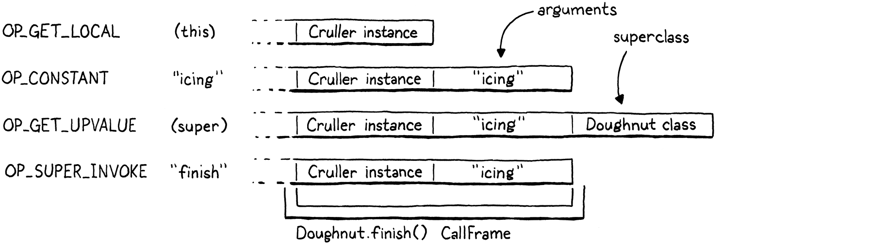

Superclasses
You can choose your friends but you sho’ can’t choose your family, an’ they’re still kin to you no matter whether you acknowledge ’em or not, and it makes you look right silly when you don’t.
Harper Lee, To Kill a Mockingbird
This is the very last chapter where we add new functionality to our VM. We’ve packed almost the entire Lox language in there already. All that remains is inheriting methods and calling superclass methods. We have another chapter after this one, but it introduces no new behavior. It only makes existing stuff faster. Make it to the end of this one, and you’ll have a complete Lox implementation.
Some of the material in this chapter will remind you of jlox. The way we resolve super calls is pretty much the same, though viewed through clox’s more complex mechanism for storing state on the stack. But we have an entirely different, much faster, way of handling inherited method calls this time around.
29 . 1Inheriting Methods
We’ll kick things off with method inheritance since it’s the simpler piece. To refresh your memory, Lox inheritance syntax looks like this:
class Doughnut { cook() { print "Dunk in the fryer."; } } class Cruller < Doughnut { finish() { print "Glaze with icing."; } }
Here, the Cruller class inherits from Doughnut and thus, instances of Cruller
inherit the cook() method. I don’t know why I’m belaboring this. You know how
inheritance works. Let’s start compiling the new syntax.
currentClass = &classCompiler;
in classDeclaration()
if (match(TOKEN_LESS)) { consume(TOKEN_IDENTIFIER, "Expect superclass name."); variable(false); namedVariable(className, false); emitByte(OP_INHERIT); }
namedVariable(className, false);
After we compile the class name, if the next token is a <, then we found a
superclass clause. We consume the superclass’s identifier token, then call
variable(). That function takes the previously consumed token, treats it as a
variable reference, and emits code to load the variable’s value. In other words,
it looks up the superclass by name and pushes it onto the stack.
After that, we call namedVariable() to load the subclass doing the inheriting
onto the stack, followed by an OP_INHERIT instruction. That instruction
wires up the superclass to the new subclass. In the last chapter, we defined an
OP_METHOD instruction to mutate an existing class object by adding a method to
its method table. This is similar—the OP_INHERIT instruction takes an
existing class and applies the effect of inheritance to it.
In the previous example, when the compiler works through this bit of syntax:
class Cruller < Doughnut {
The result is this bytecode:

Before we implement the new OP_INHERIT instruction, we have an edge case to
detect.
variable(false);
in classDeclaration()
if (identifiersEqual(&className, &parser.previous)) {
error("A class can't inherit from itself.");
}
namedVariable(className, false);
A class cannot be its own superclass. Unless you have access to a deranged nuclear physicist and a very heavily modified DeLorean, you cannot inherit from yourself.
29 . 1 . 1Executing inheritance
Now onto the new instruction.
OP_CLASS,
in enum OpCode
OP_INHERIT,
OP_METHOD
There are no operands to worry about. The two values we need—superclass and subclass—are both found on the stack. That means disassembling is easy.
return constantInstruction("OP_CLASS", chunk, offset);
in disassembleInstruction()
case OP_INHERIT: return simpleInstruction("OP_INHERIT", offset);
case OP_METHOD:
The interpreter is where the action happens.
break;
in run()
case OP_INHERIT: { Value superclass = peek(1); ObjClass* subclass = AS_CLASS(peek(0)); tableAddAll(&AS_CLASS(superclass)->methods, &subclass->methods); pop(); // Subclass. break; }
case OP_METHOD:
From the top of the stack down, we have the subclass then the superclass. We grab both of those and then do the inherit-y bit. This is where clox takes a different path than jlox. In our first interpreter, each subclass stored a reference to its superclass. On method access, if we didn’t find the method in the subclass’s method table, we recursed through the inheritance chain looking at each ancestor’s method table until we found it.
For example, calling cook() on an instance of Cruller sends jlox on this
journey:

That’s a lot of work to perform during method invocation time. It’s slow, and worse, the farther an inherited method is up the ancestor chain, the slower it gets. Not a great performance story.
The new approach is much faster. When the subclass is declared, we copy all of the inherited class’s methods down into the subclass’s own method table. Later, when calling a method, any method inherited from a superclass will be found right in the subclass’s own method table. There is no extra runtime work needed for inheritance at all. By the time the class is declared, the work is done. This means inherited method calls are exactly as fast as normal method calls—a single hash table lookup.

I’ve sometimes heard this technique called “copy-down inheritance”. It’s simple and fast, but, like most optimizations, you get to use it only under certain constraints. It works in Lox because Lox classes are closed. Once a class declaration is finished executing, the set of methods for that class can never change.
In languages like Ruby, Python, and JavaScript, it’s possible to crack open an existing class and jam some new methods into it or even remove them. That would break our optimization because if those modifications happened to a superclass after the subclass declaration executed, the subclass would not pick up those changes. That breaks a user’s expectation that inheritance always reflects the current state of the superclass.
Fortunately for us (but not for users who like the feature, I guess), Lox doesn’t let you patch monkeys or punch ducks, so we can safely apply this optimization.
What about method overrides? Won’t copying the superclass’s methods into the
subclass’s method table clash with the subclass’s own methods? Fortunately, no.
We emit the OP_INHERIT after the OP_CLASS instruction that creates the
subclass but before any method declarations and OP_METHOD instructions have
been compiled. At the point that we copy the superclass’s methods down, the
subclass’s method table is empty. Any methods the subclass overrides will
overwrite those inherited entries in the table.
29 . 1 . 2Invalid superclasses
Our implementation is simple and fast, which is just the way I like my VM code. But it’s not robust. Nothing prevents a user from inheriting from an object that isn’t a class at all:
var NotClass = "So not a class"; class OhNo < NotClass {}
Obviously, no self-respecting programmer would write that, but we have to guard against potential Lox users who have no self respect. A simple runtime check fixes that.
Value superclass = peek(1);
in run()
if (!IS_CLASS(superclass)) { runtimeError("Superclass must be a class."); return INTERPRET_RUNTIME_ERROR; }
ObjClass* subclass = AS_CLASS(peek(0));
If the value we loaded from the identifier in the superclass clause isn’t an ObjClass, we report a runtime error to let the user know what we think of them and their code.
29 . 2Storing Superclasses
Did you notice that when we added method inheritance, we didn’t actually add any reference from a subclass to its superclass? After we copy the inherited methods over, we forget the superclass entirely. We don’t need to keep a handle on the superclass, so we don’t.
That won’t be sufficient to support super calls. Since a subclass may override the superclass method, we need to be able to get our hands on superclass method tables. Before we get to that mechanism, I want to refresh your memory on how super calls are statically resolved.
Back in the halcyon days of jlox, I showed you this tricky example to explain the way super calls are dispatched:
class A { method() { print "A method"; } } class B < A { method() { print "B method"; } test() { super.method(); } } class C < B {} C().test();
Inside the body of the test() method, this is an instance of C. If super
calls were resolved relative to the superclass of the receiver, then we would
look in C’s superclass, B. But super calls are resolved relative to the
superclass of the surrounding class where the super call occurs. In this case,
we are in B’s test() method, so the superclass is A, and the program should
print “A method”.
This means that super calls are not resolved dynamically based on the runtime instance. The superclass used to look up the method is a static—practically lexical—property of where the call occurs. When we added inheritance to jlox, we took advantage of that static aspect by storing the superclass in the same Environment structure we used for all lexical scopes. Almost as if the interpreter saw the above program like this:
class A { method() { print "A method"; } } var Bs_super = A; class B < A { method() { print "B method"; } test() { runtimeSuperCall(Bs_super, "method"); } } var Cs_super = B; class C < B {} C().test();
Each subclass has a hidden variable storing a reference to its superclass. Whenever we need to perform a super call, we access the superclass from that variable and tell the runtime to start looking for methods there.
We’ll take the same path with clox. The difference is that instead of jlox’s heap-allocated Environment class, we have the bytecode VM’s value stack and upvalue system. The machinery is a little different, but the overall effect is the same.
29 . 2 . 1A superclass local variable
Our compiler already emits code to load the superclass onto the stack. Instead of leaving that slot as a temporary, we create a new scope and make it a local variable.
}
in classDeclaration()
beginScope(); addLocal(syntheticToken("super")); defineVariable(0);
namedVariable(className, false);
emitByte(OP_INHERIT);
Creating a new lexical scope ensures that if we declare two classes in the same scope, each has a different local slot to store its superclass. Since we always name this variable “super”, if we didn’t make a scope for each subclass, the variables would collide.
We name the variable “super” for the same reason we use “this” as the name of
the hidden local variable that this expressions resolve to: “super” is a
reserved word, which guarantees the compiler’s hidden variable won’t collide
with a user-defined one.
The difference is that when compiling this expressions, we conveniently have a
token sitting around whose lexeme is “this”. We aren’t so lucky here. Instead,
we add a little helper function to create a synthetic token for the given constant string.
add after variable()
static Token syntheticToken(const char* text) { Token token; token.start = text; token.length = (int)strlen(text); return token; }
Since we opened a local scope for the superclass variable, we need to close it.
emitByte(OP_POP);
in classDeclaration()
if (classCompiler.hasSuperclass) { endScope(); }
currentClass = currentClass->enclosing;
We pop the scope and discard the “super” variable after compiling the class body and its methods. That way, the variable is accessible in all of the methods of the subclass. It’s a somewhat pointless optimization, but we create the scope only if there is a superclass clause. Thus we need to close the scope only if there is one.
To track that, we could declare a little local variable in classDeclaration().
But soon, other functions in the compiler will need to know whether the
surrounding class is a subclass or not. So we may as well give our future selves
a hand and store this fact as a field in the ClassCompiler now.
typedef struct ClassCompiler {
struct ClassCompiler* enclosing;
in struct ClassCompiler
bool hasSuperclass;
} ClassCompiler;
When we first initialize a ClassCompiler, we assume it is not a subclass.
ClassCompiler classCompiler;
in classDeclaration()
classCompiler.hasSuperclass = false;
classCompiler.enclosing = currentClass;
Then, if we see a superclass clause, we know we are compiling a subclass.
emitByte(OP_INHERIT);
in classDeclaration()
classCompiler.hasSuperclass = true;
}
This machinery gives us a mechanism at runtime to access the superclass object of the surrounding subclass from within any of the subclass’s methods—simply emit code to load the variable named “super”. That variable is a local outside of the method body, but our existing upvalue support enables the VM to capture that local inside the body of the method or even in functions nested inside that method.
29 . 3Super Calls
With that runtime support in place, we are ready to implement super calls. As
usual, we go front to back, starting with the new syntax. A super call begins, naturally enough, with the super keyword.
[TOKEN_RETURN] = {NULL, NULL, PREC_NONE},
replace 1 line
[TOKEN_SUPER] = {super_, NULL, PREC_NONE},
[TOKEN_THIS] = {this_, NULL, PREC_NONE},
When the expression parser lands on a super token, control jumps to a new
parsing function which starts off like so:
add after syntheticToken()
static void super_(bool canAssign) { consume(TOKEN_DOT, "Expect '.' after 'super'."); consume(TOKEN_IDENTIFIER, "Expect superclass method name."); uint8_t name = identifierConstant(&parser.previous); }
This is pretty different from how we compiled this expressions. Unlike this,
a super token is not a standalone expression.
Instead, the dot and method name following it are inseparable parts of the
syntax. However, the parenthesized argument list is separate. As with normal
method access, Lox supports getting a reference to a superclass method as a
closure without invoking it:
class A { method() { print "A"; } } class B < A { method() { var closure = super.method; closure(); // Prints "A". } }
In other words, Lox doesn’t really have super call expressions, it has super
access expressions, which you can choose to immediately invoke if you want. So
when the compiler hits a super token, we consume the subsequent . token and
then look for a method name. Methods are looked up dynamically, so we use
identifierConstant() to take the lexeme of the method name token and store it
in the constant table just like we do for property access expressions.
Here is what the compiler does after consuming those tokens:
uint8_t name = identifierConstant(&parser.previous);
in super_()
namedVariable(syntheticToken("this"), false); namedVariable(syntheticToken("super"), false); emitBytes(OP_GET_SUPER, name);
}
In order to access a superclass method on the current instance, the runtime
needs both the receiver and the superclass of the surrounding method’s class.
The first namedVariable() call generates code to look up the current receiver
stored in the hidden variable “this” and push it onto the stack. The second
namedVariable() call emits code to look up the superclass from its “super”
variable and push that on top.
Finally, we emit a new OP_GET_SUPER instruction with an operand for the
constant table index of the method name. That’s a lot to hold in your head. To
make it tangible, consider this example program:
class Doughnut { cook() { print "Dunk in the fryer."; this.finish("sprinkles"); } finish(ingredient) { print "Finish with " + ingredient; } } class Cruller < Doughnut { finish(ingredient) { // No sprinkles, always icing. super.finish("icing"); } }
The bytecode emitted for the super.finish("icing") expression looks and works
like this:

The first three instructions give the runtime access to the three pieces of information it needs to perform the super access:
-
The first instruction loads the instance onto the stack.
-
The second instruction loads the superclass where the method is resolved.
-
Then the new
OP_GET_SUPERinstuction encodes the name of the method to access as an operand.
The remaining instructions are the normal bytecode for evaluating an argument list and calling a function.
We’re almost ready to implement the new OP_GET_SUPER instruction in the
interpreter. But before we do, the compiler has some errors it is responsible
for reporting.
static void super_(bool canAssign) {
in super_()
if (currentClass == NULL) { error("Can't use 'super' outside of a class."); } else if (!currentClass->hasSuperclass) { error("Can't use 'super' in a class with no superclass."); }
consume(TOKEN_DOT, "Expect '.' after 'super'.");
A super call is meaningful only inside the body of a method (or in a function
nested inside a method), and only inside the method of a class that has a
superclass. We detect both of these cases using the value of currentClass. If
that’s NULL or points to a class with no superclass, we report those errors.
29 . 3 . 1Executing super accesses
Assuming the user didn’t put a super expression where it’s not allowed, their
code passes from the compiler over to the runtime. We’ve got ourselves a new
instruction.
OP_SET_PROPERTY,
in enum OpCode
OP_GET_SUPER,
OP_EQUAL,
We disassemble it like other opcodes that take a constant table index operand.
return constantInstruction("OP_SET_PROPERTY", chunk, offset);
in disassembleInstruction()
case OP_GET_SUPER: return constantInstruction("OP_GET_SUPER", chunk, offset);
case OP_EQUAL:
You might anticipate something harder, but interpreting the new instruction is similar to executing a normal property access.
}
in run()
case OP_GET_SUPER: { ObjString* name = READ_STRING(); ObjClass* superclass = AS_CLASS(pop()); if (!bindMethod(superclass, name)) { return INTERPRET_RUNTIME_ERROR; } break; }
case OP_EQUAL: {
As with properties, we read the method name from the
constant table. Then we pass that to bindMethod() which looks up the method in
the given class’s method table and creates an ObjBoundMethod to bundle the
resulting closure to the current instance.
The key difference is which class we pass to
bindMethod(). With a normal property access, we use the ObjInstances’s own
class, which gives us the dynamic dispatch we want. For a super call, we don’t
use the instance’s class. Instead, we use the statically resolved superclass of
the containing class, which the compiler has conveniently ensured is sitting on
top of the stack waiting for us.
We pop that superclass and pass it to bindMethod(), which correctly skips over
any overriding methods in any of the subclasses between that superclass and the
instance’s own class. It also correctly includes any methods inherited by the
superclass from any of its superclasses.
The rest of the behavior is the same. Popping the superclass leaves the instance
at the top of the stack. When bindMethod() succeeds, it pops the instance and
pushes the new bound method. Otherwise, it reports a runtime error and returns
false. In that case, we abort the interpreter.
29 . 3 . 2Faster super calls
We have superclass method accesses working now. And since the returned object is an ObjBoundMethod that you can then invoke, we’ve got super calls working too. Just like last chapter, we’ve reached a point where our VM has the complete, correct semantics.
But, also like last chapter, it’s pretty slow. Again, we’re heap allocating an
ObjBoundMethod for each super call even though most of the time the very next
instruction is an OP_CALL that immediately unpacks that bound method, invokes
it, and then discards it. In fact, this is even more likely to be true for
super calls than for regular method calls. At least with method calls there is
a chance that the user is actually invoking a function stored in a field. With
super calls, you’re always looking up a method. The only question is whether
you invoke it immediately or not.
The compiler can certainly answer that question for itself if it sees a left
parenthesis after the superclass method name, so we’ll go ahead and perform the
same optimization we did for method calls. Take out the two lines of code that
load the superclass and emit OP_GET_SUPER, and replace them with this:
namedVariable(syntheticToken("this"), false);
in super_()
replace 2 lines
if (match(TOKEN_LEFT_PAREN)) { uint8_t argCount = argumentList(); namedVariable(syntheticToken("super"), false); emitBytes(OP_SUPER_INVOKE, name); emitByte(argCount); } else { namedVariable(syntheticToken("super"), false); emitBytes(OP_GET_SUPER, name); }
}
Now before we emit anything, we look for a parenthesized argument list. If we
find one, we compile that. Then we load the superclass. After that, we emit a
new OP_SUPER_INVOKE instruction. This superinstruction combines the behavior of
OP_GET_SUPER and OP_CALL, so it takes two operands: the constant table index
of the method name to look up and the number of arguments to pass to it.
Otherwise, if we don’t find a (, we continue to compile the expression as a
super access like we did before and emit an OP_GET_SUPER.
Drifting down the compilation pipeline, our first stop is a new instruction.
OP_INVOKE,
in enum OpCode
OP_SUPER_INVOKE,
OP_CLOSURE,
And just past that, its disassembler support.
return invokeInstruction("OP_INVOKE", chunk, offset);
in disassembleInstruction()
case OP_SUPER_INVOKE: return invokeInstruction("OP_SUPER_INVOKE", chunk, offset);
case OP_CLOSURE: {
A super invocation instruction has the same set of operands as OP_INVOKE, so
we reuse the same helper to disassemble it. Finally, the pipeline dumps us into
the interpreter.
break;
}
in run()
case OP_SUPER_INVOKE: { ObjString* method = READ_STRING(); int argCount = READ_BYTE(); ObjClass* superclass = AS_CLASS(pop()); if (!invokeFromClass(superclass, method, argCount)) { return INTERPRET_RUNTIME_ERROR; } frame = &vm.frames[vm.frameCount - 1]; break; }
case OP_CLOSURE: {
This handful of code is basically our implementation of OP_INVOKE mixed
together with a dash of OP_GET_SUPER. There are some differences in how the
stack is organized, though. With an unoptimized super call, the superclass is
popped and replaced by the ObjBoundMethod for the resolved function before the
arguments to the call are executed. This ensures that by the time the OP_CALL
is executed, the bound method is under the argument list, where the runtime
expects it to be for a closure call.
With our optimized instructions, things are shuffled a bit:
Now resolving the superclass method is part of the invocation, so the arguments need to already be on the stack at the point that we look up the method. This means the superclass object is on top of the arguments.
Aside from that, the behavior is roughly the same as an OP_GET_SUPER followed
by an OP_CALL. First, we pull out the method name and argument count operands.
Then we pop the superclass off the top of the stack so that we can look up the
method in its method table. This conveniently leaves the stack set up just right
for a method call.
We pass the superclass, method name, and argument count to our existing
invokeFromClass() function. That function looks up the given method on the
given class and attempts to create a call to it with the given arity. If a
method could not be found, it returns false, and we bail out of the
interpreter. Otherwise, invokeFromClass() pushes a new CallFrame onto the call
stack for the method’s closure. That invalidates the interpreter’s cached
CallFrame pointer, so we refresh frame.
29 . 4A Complete Virtual Machine
Take a look back at what we’ve created. By my count, we wrote around 2,500 lines of fairly clean, straightforward C. That little program contains a complete implementation of the—quite high-level!—Lox language, with a whole precedence table full of expression types and a suite of control flow statements. We implemented variables, functions, closures, classes, fields, methods, and inheritance.
Even more impressive, our implementation is portable to any platform with a C compiler, and is fast enough for real-world production use. We have a single-pass bytecode compiler, a tight virtual machine interpreter for our internal instruction set, compact object representations, a stack for storing variables without heap allocation, and a precise garbage collector.
If you go out and start poking around in the implementations of Lua, Python, or Ruby, you will be surprised by how much of it now looks familiar to you. You have seriously leveled up your knowledge of how programming languages work, which in turn gives you a deeper understanding of programming itself. It’s like you used to be a race car driver, and now you can pop the hood and repair the engine too.
You can stop here if you like. The two implementations of Lox you have are complete and full featured. You built the car and can drive it wherever you want now. But if you are looking to have more fun tuning and tweaking for even greater performance out on the track, there is one more chapter. We don’t add any new capabilities, but we roll in a couple of classic optimizations to squeeze even more perf out. If that sounds fun, keep reading . . .
Challenges
-
A tenet of object-oriented programming is that a class should ensure new objects are in a valid state. In Lox, that means defining an initializer that populates the instance’s fields. Inheritance complicates invariants because the instance must be in a valid state according to all of the classes in the object’s inheritance chain.
The easy part is remembering to call
super.init()in each subclass’sinit()method. The harder part is fields. There is nothing preventing two classes in the inheritance chain from accidentally claiming the same field name. When this happens, they will step on each other’s fields and possibly leave you with an instance in a broken state.If Lox was your language, how would you address this, if at all? If you would change the language, implement your change.
-
Our copy-down inheritance optimization is valid only because Lox does not permit you to modify a class’s methods after its declaration. This means we don’t have to worry about the copied methods in the subclass getting out of sync with later changes to the superclass.
Other languages, like Ruby, do allow classes to be modified after the fact. How do implementations of languages like that support class modification while keeping method resolution efficient?
-
In the jlox chapter on inheritance, we had a challenge to implement the BETA language’s approach to method overriding. Solve the challenge again, but this time in clox. Here’s the description of the previous challenge:
In Lox, as in most other object-oriented languages, when looking up a method, we start at the bottom of the class hierarchy and work our way up—a subclass’s method is preferred over a superclass’s. In order to get to the superclass method from within an overriding method, you use
super.The language BETA takes the opposite approach. When you call a method, it starts at the top of the class hierarchy and works down. A superclass method wins over a subclass method. In order to get to the subclass method, the superclass method can call
inner, which is sort of like the inverse ofsuper. It chains to the next method down the hierarchy.The superclass method controls when and where the subclass is allowed to refine its behavior. If the superclass method doesn’t call
innerat all, then the subclass has no way of overriding or modifying the superclass’s behavior.Take out Lox’s current overriding and
superbehavior, and replace it with BETA’s semantics. In short:-
When calling a method on a class, the method highest on the class’s inheritance chain takes precedence.
-
Inside the body of a method, a call to
innerlooks for a method with the same name in the nearest subclass along the inheritance chain between the class containing theinnerand the class ofthis. If there is no matching method, theinnercall does nothing.
For example:
class Doughnut { cook() { print "Fry until golden brown."; inner(); print "Place in a nice box."; } } class BostonCream < Doughnut { cook() { print "Pipe full of custard and coat with chocolate."; } } BostonCream().cook();
This should print:
Fry until golden brown. Pipe full of custard and coat with chocolate. Place in a nice box.
Since clox is about not just implementing Lox, but doing so with good performance, this time around try to solve the challenge with an eye towards efficiency.
-